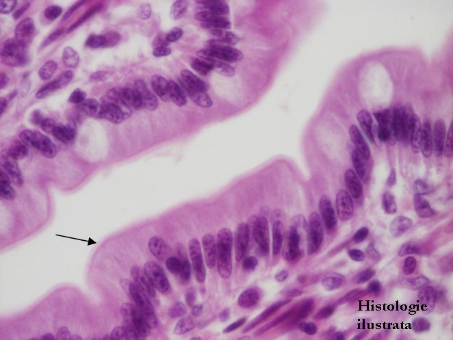
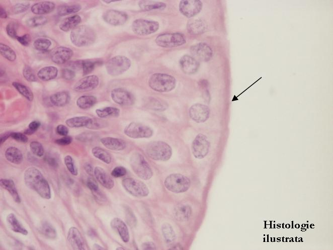

Cap.1 - Ţesutul epitelial
1.2. Specializări ale polului apical



Fig. 36 - Platou striat – vilozităţi intestinale, H.E. X 400
Fig. 37 - Stereocili – epiteliul epididimului, H.E. X 400
Fig. 38 - Cili – epiteliul trompei uterine,
T.S. X 400
Fig. 39 - Cili – epiteliul respirator al traheei, T.S. X 400

